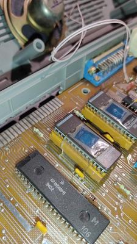
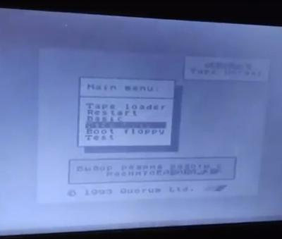
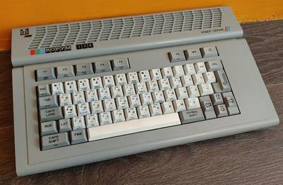
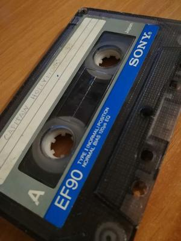

{kind=link}
Максагор и выборы
Спектрумисты сегодня как никогда близки к тому, чтобы получить собственного депутата в Госдуме. Пожелаем Максагору пройти, а сами подкинем идеи для будущих законопроектов:
объявить 23 апреля (ДР ZX) всероссийским днем спектрумизма с обязательным салютом из 1982 залпов,
переименовать Санкт-Петербург в Ленинград в честь разработанного там компьютера,
учитывать в трудовом стаже каждый год, проведенный за Спектрумом, за два года,
отменить налоги для производителей ZX-новоделов,
продвигать обязательное оснащение школ пентевами,
обязать всех производителей продающихся на территории РФ телевизоров оборудовать их полноценным SCART-разъёмом,
и, наконец, заменить кнопку CTRL на всех клавиатурах на SYMBOL SHIFT!
Сэр Клайв :(
Sir Clive Sinclair
30.07.1940 – 16.09.2021
Прощайте, сэр Клайв! Неважно, с чего вы вдруг решили, что компьютеры должны быть дешевыми и доступными, но без этого решения мир бы был немного другим. Нынешний мне нравится больше.

Ретрожелезо в припяти
KREOSAN копается в ретро-железе на заброшенном заводе "Юпитер" в Припяти. Интересное начинается с 10:50
В кадре видеотерминал СМ 7209, чешская клавиатура Consul 262.3 и обломок платы от неё, дискеты 5.25", склад перфокарт и т.д.
https://www.youtube.com/watch?v=GlRyVYd76nU
Кворум БК06
Пополнил свою коллекцию Кворумов моделью БК-06. Это почти аналог Кворума-128, но с укороченной клавиатурой и выпущенный на другом заводе.
Внутри у него прекрасное — ПЗУ зафиксированы скотчем. И, что забавно, это не помогло. Где-то контакт всё равно отвалился и в меню иногда печатались кракозябры вместо текста (там, видимо, шрифт берется из ZX48 ROM, и меню, чтобы до него добраться, активно для этого щелкает банками). Перевоткнул - заработало.
  {kind=link}
{kind=link}
{kind=link}
Лохотрон с ценами на ретро
За последний год вам, наверное, попадалась пара новостей про картриджи, проданные на аукционах за рекордную цену. Например, Mario 64 за $1.5 млн, Mario Bros. для NES за $2 млн. Тут некто Карл Джобст провел расследование того, как так вышло, что вещи, ещё недавно стоившие от силы десятки тысяч долларов, стали стоить миллионы.
Выводы интересные. Аукционный дом, продающий такие лоты (Heritage Auctions), оказался связан с компанией-оценщиком (WATA Games), которая определяет первоначальную цену на картриджи. Компания-оценщик занимается мошенничеством, выставляя цену с потолка. Цена, которая должна зависеть от редкости картриджа и его сохрана, по факту оказывается от них независящей. После того, как оценщик выставляет зашкаливающую цену на картридж и тот по ней кому-то уходит, может выясниться, что таких же картриджей в таком же сохране очень много. Но никому из владельцев такой же копии не удается продать её за сравнимые деньги.
Все это сделано потому, что, во-первых, аукционный дом получает себе неплохой процент от продаж. А во-вторых, в руководстве компании-оценщика есть люди, которые оценивают и продают друг другу собственную коллекцию, увеличивая в процессе её стоимость в десятки и сотни раз. Ну и как вишенка на торте, один из основателей аукциона в 80-е годы был замешан в раздутии точно такого же пузыря на рынке коллекционных монет.
Так что если вы, читая новости о росте цен на видеоигры, рассчитывали ближе к пенсии распродать свою коллекцию и уехать жить в Монако, то, возможно, стоит подкорректировать планы 😔
https://www.youtube.com/watch?v=rvLFEh7V18A
Новый видос! Клавиатурные фамиклоны и их бейсик
Новый видос! Смотрим, на что был способен бейсик для Денди/Фамикома. Заодно хвастаюсь коллекцией клавиатурных Фамиклонов.
https://www.youtube.com/watch?v=R6v3CsYhpnY
Tape Version
Обратите, пожалуйста, внимание на опрос. Станислав уже много лет буквально 24/7 ищет кассеты, покупает, оцифровывает и сохраняет тот пласт культуры, про который большинство даже и не задумывается, а именно ленточные пиратские хаки. Мне кажется, его труд явно заслуживает донатов.
На рынке ZX-кассет ситуация вообще забавная. Лет 10 назад они были никому не нужны и их отдавали чуть ли не за самовывоз. Но потом Станислав и другие "археологи" стали массово их покупать, чтобы оцифровывать и выкладывать в общий доступ. Такой ажиотажный спрос обрадовал барыг, которые нынче ломят по 100-200 рублей за одну кассету. Да и простые люди, кто хочет продать свою коллекцию, заходят на авито, смотрят на среднюю цену и выставляют себе такой же оверпрайс.
При этом кроме группы этих "археологов" кассеты, в общем-то, никому не нужны. Кроме них их покупают разве что редкие ностальгирующие, которых по каким-то причинам не устраивают оригинальные версии с WoS и плеер tap/tzx на смартфоне. Это можно сказать, что единичные люди.
В итоге купленная и без того за завышенную цену чья-то коллекция сразу в момент покупки превращается в неликвид, который практически невозможно продать кроме как за бесценок. Как в таких реалиях у людей не опускаются руки - я совершенно не понимаю. И мне кажется, что такие их усилия нужно поддерживать всеми возможными способами.
Опять мусор домой тащит
Нашел на улице в снегу кассету, написано Captain Hollywood 93. Аж сердце учащенно забилось — это ж топовый евроденс. А евроденс — это ж, считай, почти чиптюн. Вставляю, включаю — а там уже отечественная эстрада конца 90-х. Жизнь — боль. Придется как обычно клипы на ютубе смотреть.
{kind=link}
8 марта
8.3 - это же день коротких имен MS-DOS (и CP/M)! Милые короткие имена, оставайтесь и дальше украшением наших FAT. Пусть никакие LFN не испортят вашей хрупкой красоты! С ПРАЗДН~1.!!!